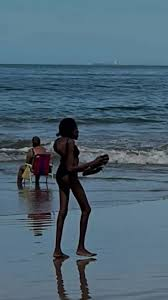

O que fazemos?
Conscientizamos sobre a importância de descartar o lixo corretamente nas lixeiras.
Com isso, ajudamos o meio ambiente promovendo a destinação adequada dos resíduos. Fazemos a coleta e ensinamos a importância de cada cor de cada lixo para a reciclagem funcionar de forma correta.

Para o que cada lixeira serve?
Antes de tudo, é importante conhecer as cores das lixeiras e o que cada uma representa.
Cada lixeira da coleta seletiva tem uma cor específica, que indica o tipo de resíduo que deve ser descartado nela. Saber isso é essencial para separar corretamente o lixo, facilitar a reciclagem e proteger o meio ambiente.
A seguir, veja a função de cada cor e por que é importante usá-las corretamente:

NOME LUGAR
SUBTÍTULO
LOREM
Post por Rodrigo
NOME LUGAR
SUBTÍTULO
LOREM

Post por Maria
NOME LUGAR
SUBTÍTULO
LOREM
Post por Jhon Doe